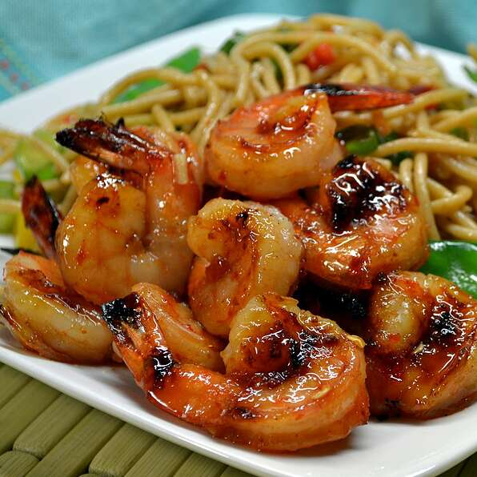

Sweet & Spicy Grilled Shrimp

Description
This is something a little more flavorful for grilling shrimp. This recipe is also delicious brushed onto bacon wrapped shrimp.
Ingredients
- 6 bamboo skewers, soaked in water for 20 minutes
- 1/2 cup chile-garlic sauce
- 1/2 cup honey
- 1 pound medium shrimp, peeled and deveined
Steps
-
Preheat grill for medium heat and lightly oil the grate.
-
Stir chile-garlic sauce and honey together in a small bowl.
-
Thread shrimp onto soaked bamboo skewers, piercing through the head and tail ends.
-
Cook the skewers on the preheated grill, frequently turning and basting with the sauce mixture, until shrimp are firm and pink on all sides, about 10 minutes.
Return To Recipes